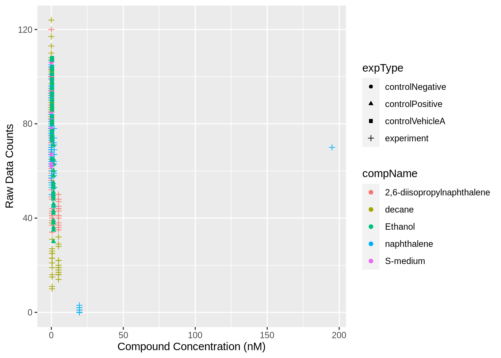
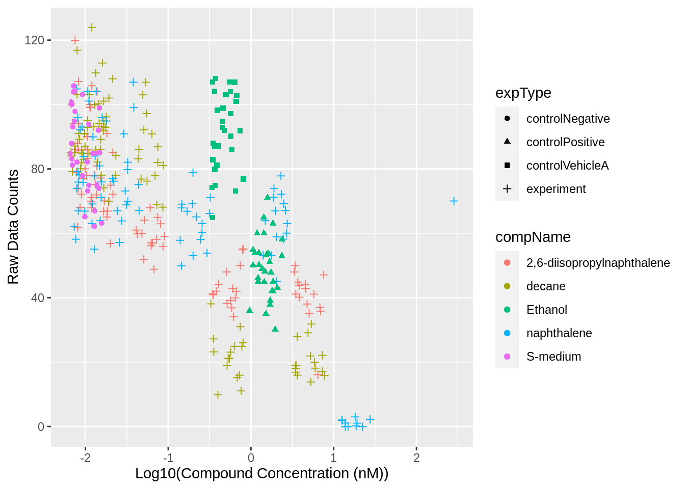
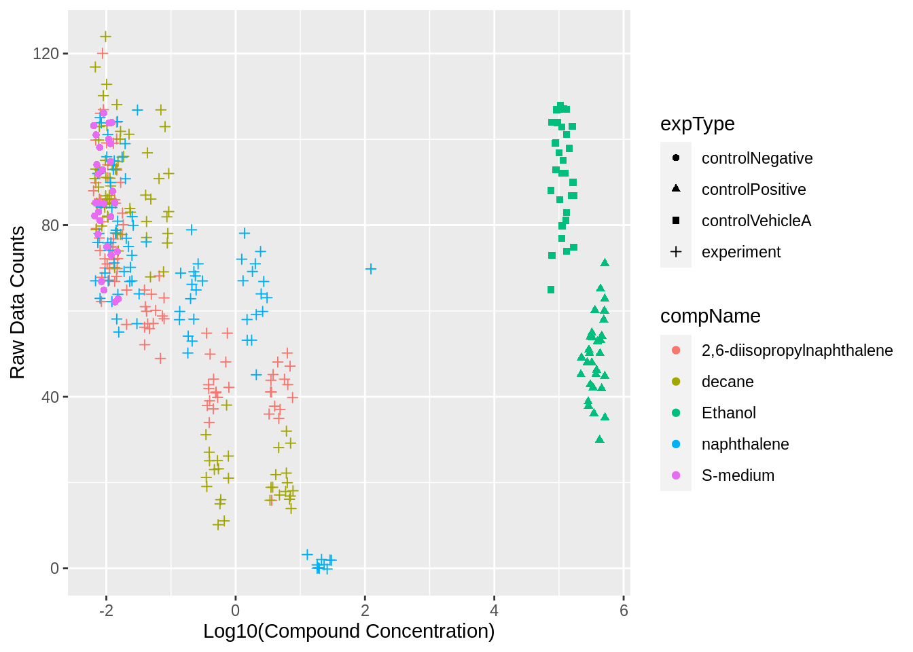
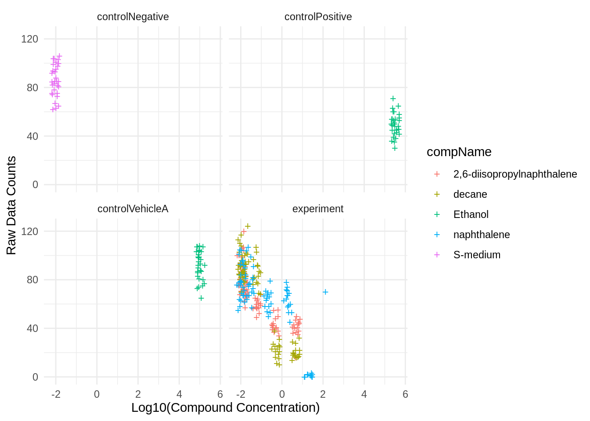
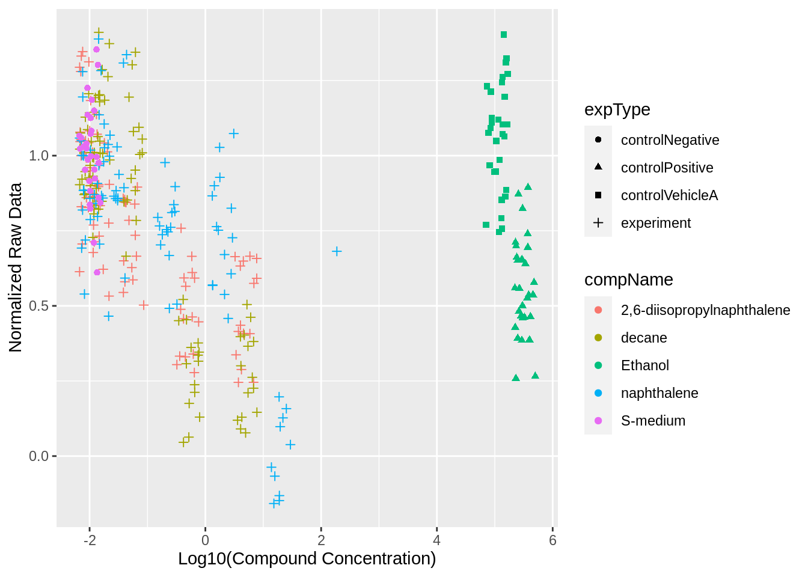

Chapter 6 Reproducing an Analysis
In this part we will be reproducing an analysis with data supplied by J. Louter (INT/ILC) Different compounds were tested on adult C.elegans and the amount of offspring were counted.
# Load libraries
library(readr)
library(ggplot2)
library(DT)
library(readxl)
library(dplyr)6.1 Getting the data
First we will need to get the data from somewhere, we use wget to download the excel file from github.
# Go to raw_data
cd c.elegans/raw_data/
# Download the excel sheet dataset
wget -O "CE.LIQ.FLOW.062_Tidydata.xlsx" https://github.com/DataScienceILC/tlsc-dsfb26v-20_workflows/raw/main/data/CE.LIQ.FLOW.062_Tidydata.xlsxNow we can read the file into R.
# Read the excel file
C.elegans_data <- read_excel(path = "c.elegans/raw_data/CE.LIQ.FLOW.062_Tidydata.xlsx")The file is now read into R.
6.2 Normalizing the data
# Display the important rows
C.elegans_data %>% select(c(RawData, compName, compConcentration)) ## # A tibble: 360 × 3
## RawData compName compConcentration
## <dbl> <chr> <chr>
## 1 44 2,6-diisopropylnaphthalene 4.99
## 2 37 2,6-diisopropylnaphthalene 4.99
## 3 45 2,6-diisopropylnaphthalene 4.99
## 4 47 2,6-diisopropylnaphthalene 4.99
## 5 41 2,6-diisopropylnaphthalene 4.99
## 6 35 2,6-diisopropylnaphthalene 4.99
## 7 41 2,6-diisopropylnaphthalene 4.99
## 8 36 2,6-diisopropylnaphthalene 4.99
## 9 40 2,6-diisopropylnaphthalene 4.99
## 10 38 2,6-diisopropylnaphthalene 4.99
## # … with 350 more rowsHere we see that compConcentration is of chr type, so we have to change it into a numeric type.
# Use parse_number to change the conecentration into numeric
C.elegans_data$compConcentration <- parse_number(C.elegans_data$compConcentration)
# Display the rows again
C.elegans_data %>% select(c(RawData, compName, compConcentration)) ## # A tibble: 360 × 3
## RawData compName compConcentration
## <dbl> <chr> <dbl>
## 1 44 2,6-diisopropylnaphthalene 4.99
## 2 37 2,6-diisopropylnaphthalene 4.99
## 3 45 2,6-diisopropylnaphthalene 4.99
## 4 47 2,6-diisopropylnaphthalene 4.99
## 5 41 2,6-diisopropylnaphthalene 4.99
## 6 35 2,6-diisopropylnaphthalene 4.99
## 7 41 2,6-diisopropylnaphthalene 4.99
## 8 36 2,6-diisopropylnaphthalene 4.99
## 9 40 2,6-diisopropylnaphthalene 4.99
## 10 38 2,6-diisopropylnaphthalene 4.99
## # … with 350 more rowsWe can see the type is now of dbl type.
6.3 Visualizing the data
# Create scatterplot
ggplot(C.elegans_data, aes(x = compConcentration, y = RawData, color = compName, shape = expType)) +
geom_point() +
labs(x = "Compound Concentration (nM)", y = "Raw Data Counts") ## Warning: Removed 5 rows containing missing values (`geom_point()`).
The graph is really cramped into the left part because of a couple of very high concentrations. This occurs because the concentrations are created by diluting the previous solution by 1/10, so the concentrations are exponential.
An obvious fix for this is to use an log10 transformation on the x-axis.
# Create plot, note that we added + 0.01 this is becasue the log10 of 0 is undefined.
# So adding 0.01 makes sure that points where concentration is 0 (controlNegative) show up in the graph
ggplot(C.elegans_data, aes(x = log10(compConcentration + 0.01), y = RawData, color = compName, shape = expType)) +
geom_point(position = position_jitter(width = 0.2, height = 0.2)) + # Add jitter
labs(x = "Log10(Compound Concentration (nM))", y = "Raw Data Counts")## Warning: Removed 5 rows containing missing values (`geom_point()`).
This looks way better, we also added some jitter to prevent points from overlapping.
6.4 Normalizing the data again
We have put nanomolar(nM) on the x axis but not all the data is in nM some points are in percentage(pct) as shown below
#show that both nM and pct are used
C.elegans_data$compUnit %>% unique()## [1] "nM" "pct"Lets take a look to see where pct is being used.
# Select rows where compUnit is pct and select the more important columns
C.elegans_data %>% filter(compUnit == "pct") %>% select(c(compName, expType, RawData, compConcentration, compUnit)) %>%
datatable(options = list(pageLength = 5)) # Show as datatableAs you can see in the interactive table both the positive control and the negative control, as well as the vehicle control, are in percentage (pct). Since the concentration (pct) of the negative control is 0 (nothing added) we can ignore the negative control and focus on the other two, these are both ethanol solution with either 1,5% or 0,5% ethanol.
Both the positive control and the control Vehicle A are in percentage ethanol solution. We can use a formula to transfer these to nM like the rest of the data. \[nM=(x*10^7)/46,07\] Where x is the percentage ethanol. Here we use this formula to change the percentages to molarity but its important to do this only in the rows where the compName is ethanol and the compunit pct.
# Change compConcentration where compName is Ethanol and compUnit pct
C.elegans_data$compConcentration <- ifelse(C.elegans_data$compName == "Ethanol" & C.elegans_data$compUnit == "pct",
(C.elegans_data$compConcentration * 10^7) / 46.07,
C.elegans_data$compConcentration)Now that we changed the values from percentage to nM we can visualize the data again.
6.5 Visualizing the data again
Now the data is acctually normalized we can finally visualize the data so we create a scatterplot again.
ggplot(C.elegans_data, aes(x = log10(compConcentration + 0.01), y = RawData, color = compName, shape = expType)) +
geom_point(position = position_jitter(width = 0.2, height = 0.2)) + # Add jitter
labs(x = "Log10(Compound Concentration)", y = "Raw Data Counts") ## Warning: Removed 5 rows containing missing values (`geom_point()`).
We also create a faceted graph to make it a bit easier to see the different controls.
# Create a faceted scatterplot with log-transformed x-axis and jitter using crosses
ggplot(C.elegans_data, aes(x = log10(compConcentration + 0.01), y = RawData, color = compName)) +
geom_point(shape = "+", size = 3, position = position_jitter(width = 0.2, height = 0.2)) +
labs(x = "Log10(Compound Concentration)", y = "Raw Data Counts") +
facet_wrap(~expType, scales = "fixed", ncol = 2) + # split graph in 4 for every exptype
theme_minimal()## Warning: Removed 5 rows containing missing values (`geom_point()`).
The negative control for this experiment is S-medium 0 nM so basically nothing is added, and the positive control is a high concentration ethanol.
Think about how you would analyze this experiment to learn whether there is indeed an effect of different concentrations on offspring count and whether the different compounds have a different curve (IC50). Write down you analysis as a step-wise plan.
Normalizing the data for the negative control helps compare different compounds fairly. It removes baseline differences and it makes it easier to see the specific effects of each compound on offspring count.
Normalize data so the mean of the negative control is 1.
# Find the mean of controlNegative
controlNegative_mean <- mean(C.elegans_data$RawData[C.elegans_data$expType == "controlNegative"], na.rm = TRUE)
# Use mean to nomralize data
C.elegans_data <- C.elegans_data %>%
mutate(Normalized_RawData = RawData / controlNegative_mean)ggplot(C.elegans_data, aes(x = log10(compConcentration + 0.01), y = Normalized_RawData, color = compName, shape = expType)) +
geom_point(position = position_jitter(width = 0.2, height = 0.2)) +
labs(x = "Log10(Compound Concentration)", y = "Normalized Raw Data") ## Warning: Removed 5 rows containing missing values (`geom_point()`).
6.6 Step-wise Plan for Dose-Response Curve Analysis
Usually after normalizing the results like this, dose response curves are made to assess whether different concentrations have a different effect on the offspring count, and to find out how the curves from the different compounds compare to each other.
One way to do this is using the {drc} package in R https://github.com/RaoulWolf/FMI330Step 1, Fitting Dose-Response Curves
First we should use the {drm} function from the {drc} package to fit a dose-response model for each compound. This would look something like this:
fronds_number_inhibition.drm <- drm(formula = Normalized_RawData ~ log10(compConcentration + 0.01),
data = C.elegans_data, fct = LL.4(names = c("Slope", "Lower Limit", "Upper Limit", "EC50")))The above code doesn’t work right now but it should look something like that.
Step 2, Plotting the Dose-Response Curves
Now we can plot the Dose-Response Curves
data.frame(compConcentration = seq(from = min(C.elegans_data$compConcentration),
to = max(C.elegans_data$compConcentration),
length.out = 1000)) %>%
mutate(fit = predict(fronds_number_inhibition.drm, newdata = .),
lwr = predict(fronds_number_inhibition.drm, newdata = ., interval = "confidence", vcov. = sandwich)[, 2],
upr = predict(fronds_number_inhibition.drm, newdata = ., interval = "confidence", vcov. = sandwich)[, 3]) %>%
ggplot() +
geom_ribbon(mapping = aes(x = compConcentration, ymin = lwr, ymax = upr), alpha = 0.2) +
geom_line(mapping = aes(x = compConcentration, y = fit), size = 1) +
geom_point(mapping = aes(x = compConcentration, y = Normalized_RawData), data = C.elegans_data, size = 2, alpha = 0.5) +
labs(x = "Diuron (mg/L)",
y = "Fronds number inhibition (%)") +
theme_light()Step 3, Estimating LC50
To complete the LC50 analysis, we need to extract LC50 (lethal concentration for 50% inhibition).
lc50 <- ED(fronds_number_inhibition.drm, 50)Step 4, ANOVA
As the last stap we would want to test for significant differences between the compunds this could be done with an ANOVA.